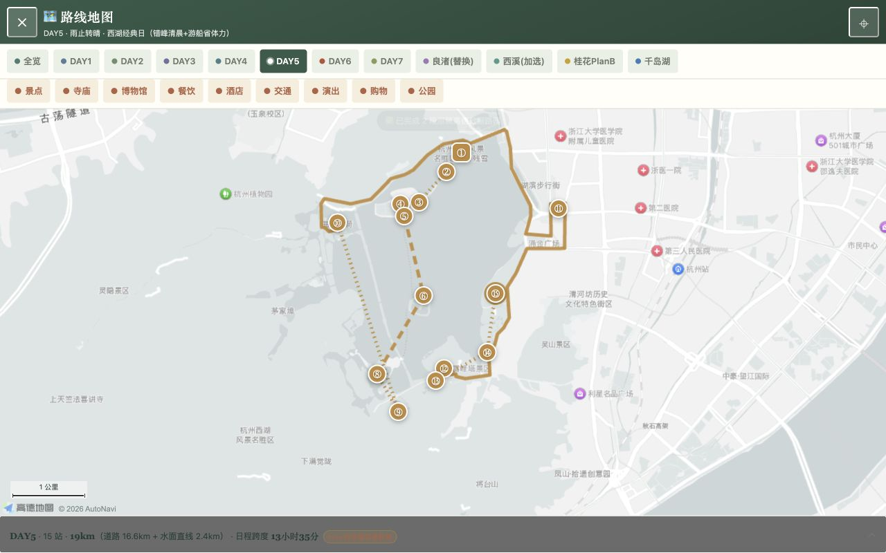
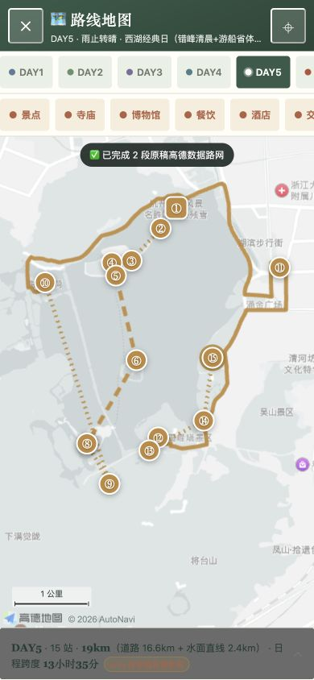
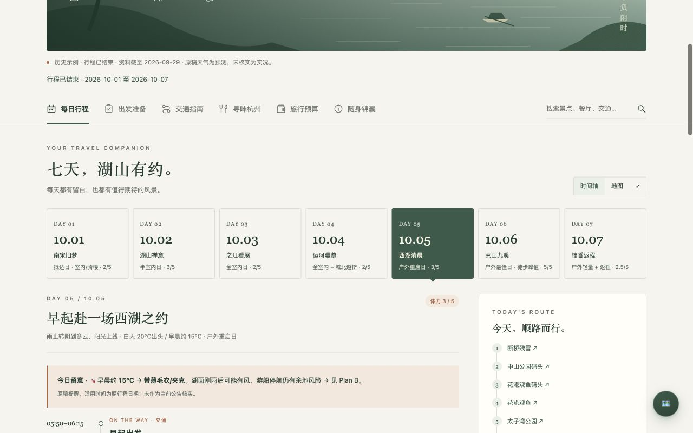
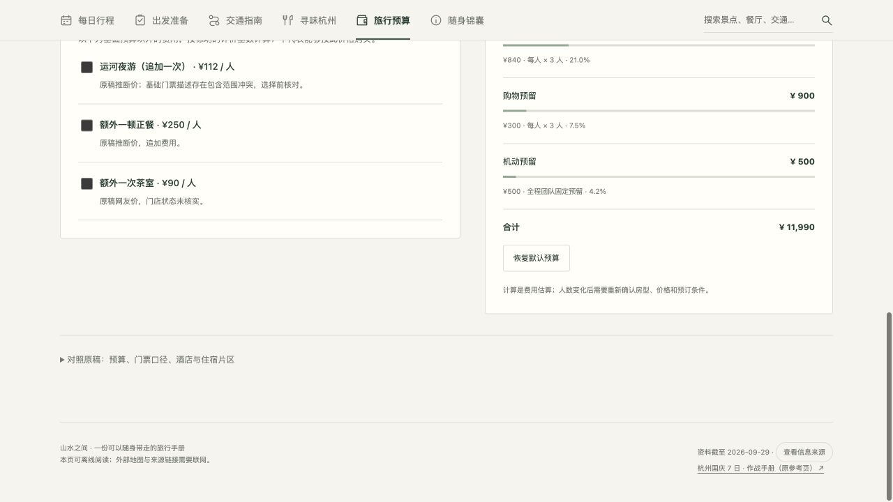
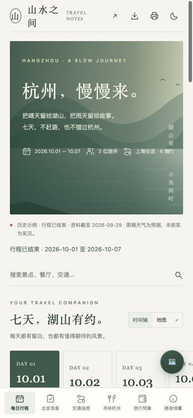
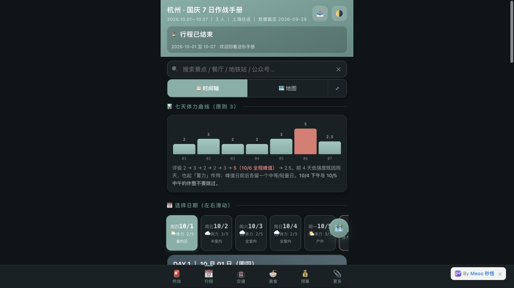
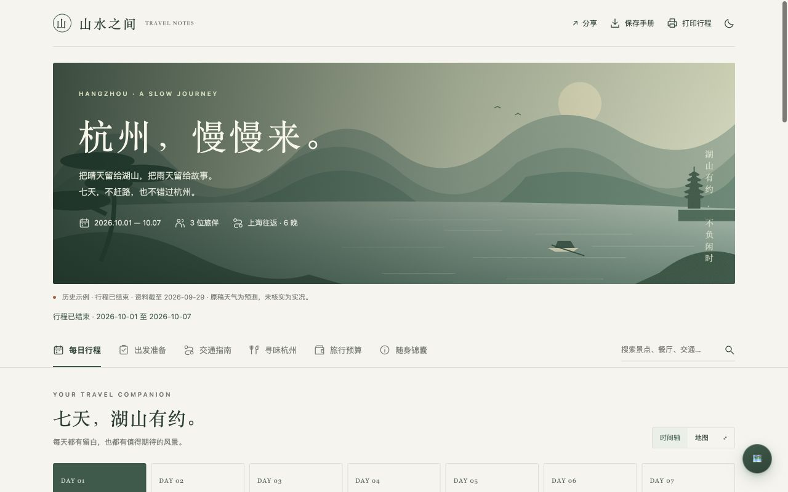

案例一 · 杭州七日完整攻略
上海往返、3 人、7 天 6 晚。保留 66 个时间段、81 个日路线站点、4 组备选、9 类筛选，以及预算、准备和营业资料。真实地图功能可以在网页中直接体验。
查看杭州地图案例 ↗以公开的杭州七日攻略为案例，保留真实地图、路线与筛选、逐日安排、出行准备、预算和备选方案，重做为暖白与墨绿的旅行杂志。页面、数据合同与生成流程一起封装，供下一次旅行复用。
下方是真实可交互页面，默认进入地图：可切日期、打开全屏查看全程/备选路线、筛选类别、点击地点和路段；也可以查资料、勾清单、试预算。默认按手机尺寸预览，也可以切到桌面。建议在新窗口中查看真实地图与底部导航。





原页作为内容和功能参考；视觉采用独立 HTML 设计；真实地图、地点坐标与预计算路线模块复用参考页，并适配新版布局。

以移动端窄屏为主，警示与细节密集，适合查事。

宽幅湖景、衬线标题与留白，行程正文和参考资料分层。
上海往返、3 人、7 天 6 晚。保留 66 个时间段、81 个日路线站点、4 组备选、9 类筛选，以及预算、准备和营业资料。真实地图功能可以在网页中直接体验。
查看杭州地图案例 ↗两天一晚示例，演示空日期、待确认信息与按不同基数计价。候选地点、额度均未作为真实报价或已核实安排；地图未配置，明确待补充。
查看草稿示例 ↗暖白底、墨绿主色、陶土色重点；中文衬线标题配清晰正文。原创 SVG 湖山插画内嵌，离线也能显示。
关键行程先显示；实用细节、路线分支与原稿资料放在折叠区。日期、栏目和搜索都有直接入口。
手机单列与底部六栏导航；桌面时间轴搭配侧栏。深浅主题、离线下载和全程打印已经接通。
研究和编排由 Agent 执行，生成与交互由随包模板和脚本提供。每项能力都写清输入、输出、依赖和验证方式。
| 能力 | 产出 | 依赖 / 边界 |
|---|---|---|
| 参考读取 | 提取真实栏目、事实、时间段和备选，保留原来源。 | 浏览器或文档读取；外部内容不授予执行权限。 |
| 事实研究 | 开放、票价、预约、交通、天气的来源与核实状态。 | 搜索和官方来源；历史攻略不作为当前事实。 |
| 行程编排 | 按片区串联，包含交通、用餐、休息、强度和撤退方案。 | 明确同行者与时间假设；不声称实时最优路线。 |
| 页面生成 | trip.json → 单文件旅行手册。 | Python 3.9+；无需 npm 和后端。 |
| 地图与路线 | 全程、逐日、四组备选；九类地点筛选、缩放拖动、地点详情、路段距离和全屏。可在高德打开地点。 | 高德真实地理底图；地图路线取自原稿预计算数据，不是实时路况。 |
| 预算估算 | 按人数、每晚、团队固定或每人每天计算分项、总额、人均。 | 估算而非报价；套餐范围冲突必须显式保留。 |
| 准备与检索 | 5 项优先事项与 25 项预约清单分别保存；搜索跳转、来源解释、名称复制与电话拨号。 | 浏览器本地状态；出发倒计时、当日定位、主题保存与原生分享入口。 |
| 验收与分享 | 实际页面、截图、验证记录；按需发布真实 URL。 | 本站已托管于 GitHub Pages；完整案例和技能包可直接预览/下载。 |
触发条件、输入处理、事实研究、行程编排、页面输出与验收要求。可用于新攻略，也可用于已有攻略美化。
查看 SKILL.md ↗HTML / CSS / JS 与原创 SVG 全部内嵌；地图模块与样式也随包，点击地图时才联网加载高德 SDK。生成器注入 JSON 并做基本校验。
下载原始页面模板可填写的数据结构、来源等级、计价基数与空数据规则。支持日期未定的草稿。
查看数据合同 ↗ · 杭州样例 JSON一条 Python 命令生成独立 HTML。可下载技能包或克隆仓库，放到支持 SKILL.md 的 Agent 技能目录。
下载生成脚本 · 完整技能 ZIPtravel-guide-studio/ ├── SKILL.md ├── agents/openai.yaml ├── assets/page-template.html ├── assets/example-trip.json ├── assets/route-map.js ├── assets/route-map.css ├── references/capabilities.md ├── references/data-contract.md └── scripts/render.py python3 travel-guide-studio/scripts/render.py trip.json travel-guide.html
下次可以这样使用：
使用 $travel-guide-studio，帮我安排苏州两天一晚的轻松旅行，日期未定，上海出发，3 人。先把未确定事项写明，生成可交互页面供我 review。
生成器已经用“两天一晚、日期未定”的苏州输入做了独立复用测试。它没有继承杭州美食和历史状态；新目的地的主视觉和内容仍需按技能要求适配。
本次数据边界：杭州样例沿用原页截至 2026-09-29 的资料，本次未逐项重查旅游事实。天气是原稿预测，原作者“官方”等来源标签没有升级为独立核实。原稿门票预算的包含范围冲突保留在页面中。
页面边界：地图使用真实底图；坐标与预计算路线内嵌，地图底图和外链需联网。预算变化不验证房间容量、实时售价或库存。模板没有预订、付款、后台同步或通知功能。